Top Masteries
 By
Amir96lx
By
Amir96lx
Contents
- Intro
- Current Champions
- Notable Milestones
-
Category Rankings
- Total Awards
- Total Awards (Excluding Hacks)
- Event Awards
- Site Awards
- Hack Awards
- Homebrew Awards
- Subset Awards
- Amstrad CPC
- Apple II
- Arcade
- Arcadia 2001
- Arduboy
- Atari 2600
- Atari Jaguar CD
- Dreamcast
- Elektor TV Games Computer
- Fairchild Channel F
- Game Boy
- Game Boy Advance
- Game Boy Color
- Game Gear
- GameCube
- Interton VC 4000
- Master System
- Mega Drive
- Mega Duck
- Nintendo 64
- NES
- Nintendo DS
- Nintendo DSi
- PC Engine
- PC Engine CD
- PC-8000/8800
- PlayStation
- PlayStation 2
- PlayStation Portable
- Pokémon Mini
- Sega Saturn
- Sega CD
- SG-1000
- SNES
- Uzebox
- Virtual Boy
- WASM-4
- Watara Supervision
Intro
We are going to take a look at another metric for greatness, Mastery Awards. Mastery awards are given to users when they complete every achievement for a given set in hardcore mode. Users wear mastery awards as a badge of honor on their profile page representing all the hard work they put into truly becoming a master of the game.
Below we will take a look at which users rank among the best with the most mastery awards in several categories well as notable updates from the previous month to each individual category. Check to see how you rank among the rest of the community members.
Special thanks to  Nydaxn for creating the ranking image templates.
Nydaxn for creating the ranking image templates.
* Data as of April 1st 2025.
Current Champions
 Total Awards
Total Awards 3DO Interactive Multiplayer
3DO Interactive Multiplayer HotCoffee
HotCoffee Amstrad CPC
Amstrad CPC Apple II
Apple II Arcade
Arcade Arcadia 2001
Arcadia 2001 Arduboy
Arduboy Atari 2600
Atari 2600 Atari 7800
Atari 7800 Atari Jaguar
Atari Jaguar Atari Jaguar CD
Atari Jaguar CD Atari Lynx
Atari Lynx ColecoVision
ColecoVision Dreamcast
Dreamcast Elektor TV Games Computer
Elektor TV Games Computer Fairchild Channel F
Fairchild Channel F Game Boy
Game Boy Game Boy Advance
Game Boy Advance Game Boy Color
Game Boy Color Game Gear
Game Gear GameCube
GameCube Intellivision
Intellivision Interton VC 4000
Interton VC 4000 Magnavox Odyssey 2
Magnavox Odyssey 2 Master System
Master System Genesis/Mega Drive
Genesis/Mega Drive Mega Duck
Mega Duck MSX
MSX Nintendo 64
Nintendo 64 Neo Geo CD
Neo Geo CD Neo Geo Pocket
Neo Geo Pocket Maoski
Maoski NES/Famicom
NES/Famicom Nintendo DS
Nintendo DS Nintendo DSi
Nintendo DSi PC Engine/TurboGrafx-16
PC Engine/TurboGrafx-16 PC Engine CD/TurboGrafx-CD
PC Engine CD/TurboGrafx-CD PC-8000/8800
PC-8000/8800 PC-FX
PC-FX PlayStation
PlayStation PlayStation 2
PlayStation 2 PlayStation Portable
PlayStation Portable Pokémon Mini
Pokémon Mini Sega 32X
Sega 32X Sega CD
Sega CD SG-1000
SG-1000 SNES/Super Famicom
SNES/Super Famicom Uzebox
Uzebox Vectrex
Vectrex Eeroz
Eeroz Virtual Boy
Virtual Boy WASM-4
WASM-4 Watara Supervision
Watara Supervision WonderSwan
WonderSwanNotable Milestones
900 Mastery Awards
 ChoccyMilk ChoccyMilk |
800 Mastery Awards
 ChronoGear ChronoGear |
 HolyShinx HolyShinx |
 pitapocket17 pitapocket17 |
700 Mastery Awards
 VeronicaVyxie VeronicaVyxie |
600 Mastery Awards
 atvdriver atvdriver |
 bonecrusher1022 bonecrusher1022 |
 DeeCee DeeCee |
500 Mastery Awards
 ElMullet ElMullet |
 OldSport OldSport |
 Prota Prota |
 Reeve42 Reeve42 |
400 Mastery Awards
 Nevanos Nevanos |
 Johan Johan |
300 Mastery Awards
 Calsun Calsun |
 CiaoTime CiaoTime |
 Darkfang114 Darkfang114 |
 Doggy227 Doggy227 |
 EBAChandler EBAChandler |
 Glendaal Glendaal |
 LordBBH LordBBH |
 Mapa589 Mapa589 |
 HylianRoach HylianRoach |
 MinatoNamikaze MinatoNamikaze |
 RodLima RodLima |
 SuperRaph64 SuperRaph64 |
 YoureWithStupid YoureWithStupid |
 ZintheDestroyr ZintheDestroyr |
 Zombie Zombie |
200 Mastery Awards
 AkumaTNT AkumaTNT |
 AlexHylian AlexHylian |
 Brylefi Brylefi |
 Pie345 Pie345 |
 JasonVoorhees JasonVoorhees |
 kljd87 kljd87 |
 Kyluya Kyluya |
 Lifeinsteps Lifeinsteps |
 Melodius Melodius |
 DataMcSponge DataMcSponge |
 PeedroHM PeedroHM |
 Purgta Purgta |
 RANGO666 RANGO666 |
 rev rev |
 xnaivx xnaivx |
 ZhenNexus ZhenNexus |
100 Mastery Awards
 Abdopp5
Abdopp5 AkunoKen
AkunoKen idontwantthis
idontwantthis Barra
Barra BeauMollet
BeauMollet BEXUS
BEXUS Biglenny99
Biglenny99 BJonsey
BJonsey Boban
Boban Brolcio13
Brolcio13 caionast
caionast Carca
Carca CatgirlOnline
CatgirlOnline ChaoPlaymate
ChaoPlaymate ChiiniiTheComet
ChiiniiTheComet DeadmanRetro
DeadmanRetro Deltazx
Deltazx DomiSwitch
DomiSwitch drac0nis
drac0nis DragonCurse4
DragonCurse4 DrJordo
DrJordo DuckswanTheAlbatross
DuckswanTheAlbatross EctoKuruta
EctoKuruta enemigodelbien
enemigodelbien Makironi
Makironi Froste
Froste gameburke
gameburke GeniusRedneck
GeniusRedneck Gollawiz
Gollawiz Hamid
Hamid Juganawt
Juganawt Kasasagi
Kasasagi Kazeaje0x
Kazeaje0x littlemothx
littlemothx ManicEraser
ManicEraser matduf
matduf Minish
Minish OceanManow
OceanManow PetyaMaddy
PetyaMaddy RandyTyler
RandyTyler RyCuLe
RyCuLe Rynnji
Rynnji samtimes
samtimes SilverTheFox
SilverTheFox spyrofan1999
spyrofan1999 SuperRAGamer18
SuperRAGamer18 Tehkoa
Tehkoa Timkabimka
Timkabimka TorchicZK
TorchicZK Trisscorp
Trisscorp TrucyStar
TrucyStar Truffellooooo
Truffellooooo xenkaroshi
xenkaroshi XenonNV
XenonNVCategory Rankings
Total Awards
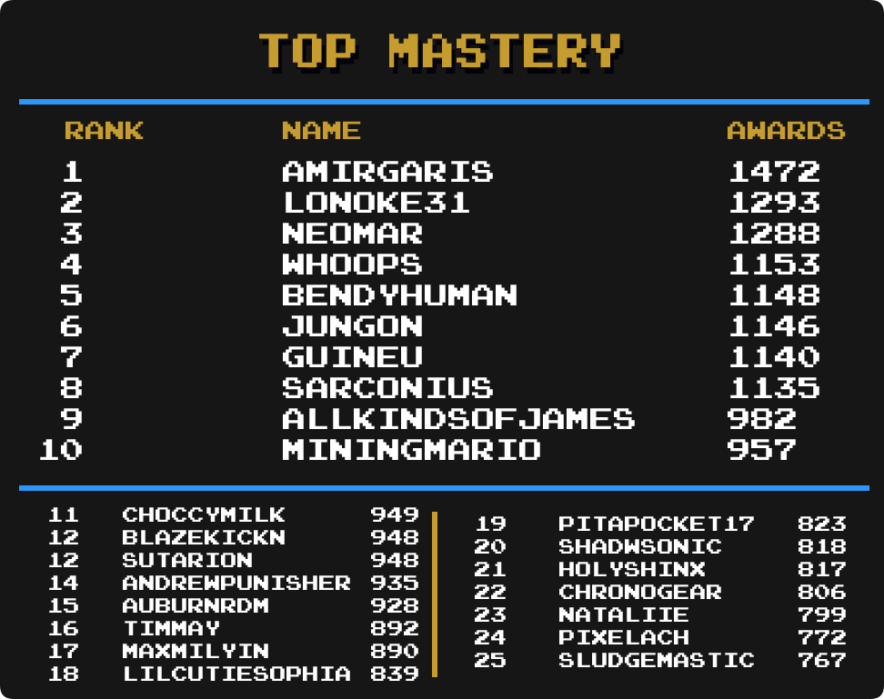
-
AmirGaris remains in 1st with 1472 total mastery awards.
-
 Whoops has moved up 2 spots and is in 4th place.
Whoops has moved up 2 spots and is in 4th place. -
 Jungon has moved up 2 spots and is in 6th place.
Jungon has moved up 2 spots and is in 6th place. -
 MiningMario has moved up 3 spots and is in 10th place.
MiningMario has moved up 3 spots and is in 10th place. -
ChoccyMilk has moved up 5 spots and is in 11th place.
-
 Sutarion has moved up 1 spot and is tied for 12th place.
Sutarion has moved up 1 spot and is tied for 12th place. -
 Timmay has moved up 1 spot and is in 16th place.
Timmay has moved up 1 spot and is in 16th place. -
pitapocket17 has moved up 2 spots and is in 19th place.
-
 Nataliie has made it into the top 25 and is in 23rd place.
Nataliie has made it into the top 25 and is in 23rd place.
Total Awards (Excluding Hacks)
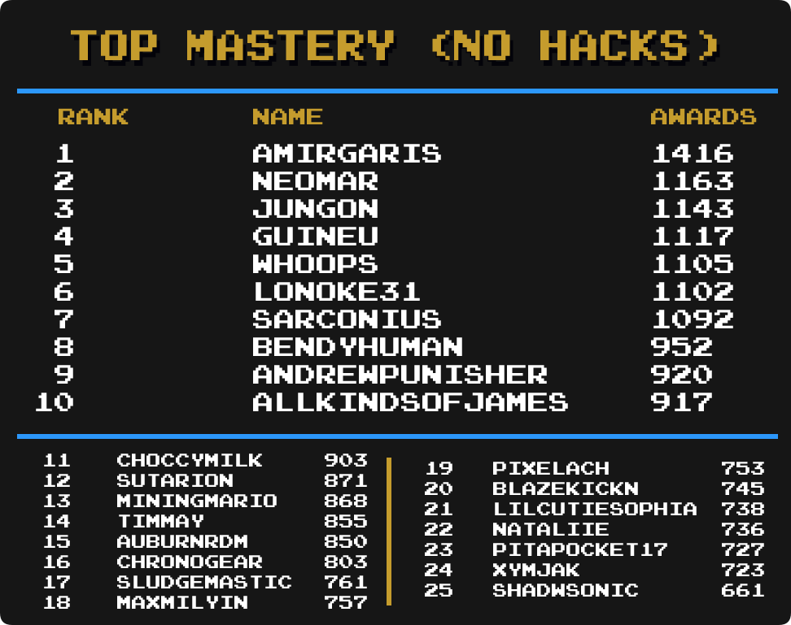
-
AmirGaris remains in 1st with 1416 total mastery awards.
-
Jungon has moved up 1 spot and is in 3rd place.
-
ChoccyMilk has moved up 3 spots and is in 11th place.
-
Sutarion has moved up 1 spot and is in 12th place.
-
Timmay has moved up 1 spot and is in 14th place.
-
Nataliie has moved up 2 spots and is in 22nd place.
Event Awards
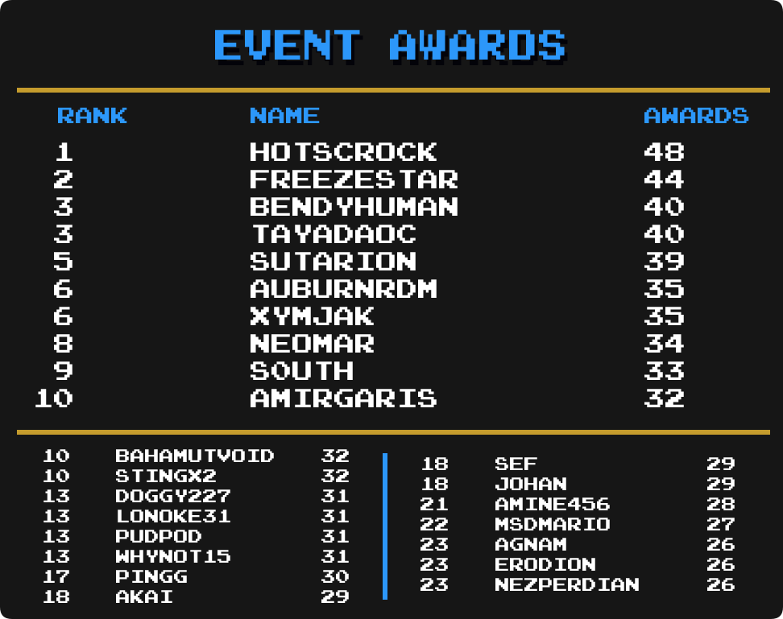
-
 Hotscrock remains in 1st with 48 total mastery awards.
Hotscrock remains in 1st with 48 total mastery awards. -
Sutarion has moved up 3 spots and is in 5th place.
-
 NEOMAR has moved up 1 spot and is in 8th place.
NEOMAR has moved up 1 spot and is in 8th place. -
 s0uth has moved up 8 spots and is in 9th place.
s0uth has moved up 8 spots and is in 9th place. -
AmirGaris has moved up 2 spots and is in a 3-way tie for 10th place.
-
 StingX2 has moved up 6 spots and is in a 3-way tie for 10th place.
StingX2 has moved up 6 spots and is in a 3-way tie for 10th place. -
Doggy227 has moved up 2 spots and is in a 4-way tie for 13th place.
-
 Whynot15 has moved up 5 spots and is in a 4-way tie for 13th place.
Whynot15 has moved up 5 spots and is in a 4-way tie for 13th place. -
 PINGG has moved up 7 spots and is in 17th place.
PINGG has moved up 7 spots and is in 17th place. -
 Erodion has made it into the top 25 and is in a 4-way tie for 23rd place.
Erodion has made it into the top 25 and is in a 4-way tie for 23rd place.
Site Awards
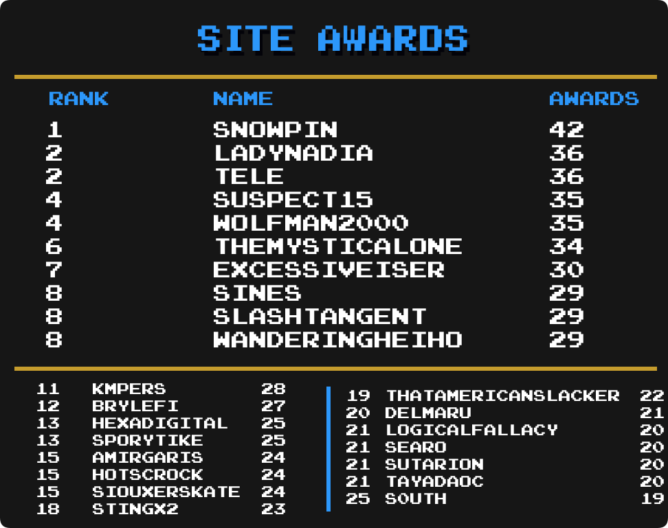
-
 SnowPin remains in 1st with 42 total mastery awards.
SnowPin remains in 1st with 42 total mastery awards. -
 LadyNadia has moved up 1 spot and is tied for 2nd place.
LadyNadia has moved up 1 spot and is tied for 2nd place. -
 wolfman2000 has moved up 1 spot and is tied for 4th place..
wolfman2000 has moved up 1 spot and is tied for 4th place..
Hack Awards
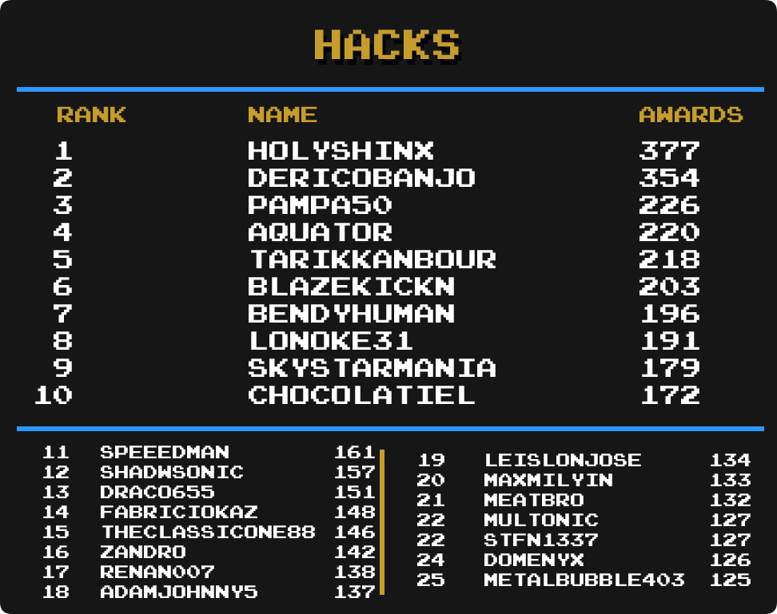
-
HolyShinx remains in 1st with 377 total mastery awards.
-
 Draco655 has moved up 3 spots and is in 13th place.
Draco655 has moved up 3 spots and is in 13th place. -
 multonic has made it into the top 25 and is tied for 22nd place.
multonic has made it into the top 25 and is tied for 22nd place.
Homebrew Awards
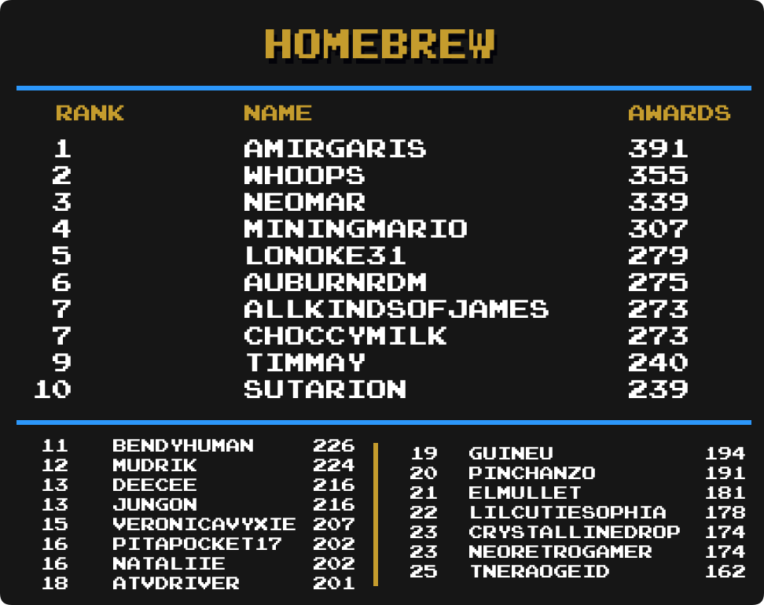
-
AmirGaris remains in 1st with 391 total mastery awards.
-
 Lonoke31 has moved up 1 spot and is in 5th place.
Lonoke31 has moved up 1 spot and is in 5th place. -
DeeCee has moved up 9 spots and is tied for 13th place.
-
atvdriver has moved up 1 spot and is in 18th place.
-
ElMullet has moved up 4 spots and is in 21st place.
Subset Awards
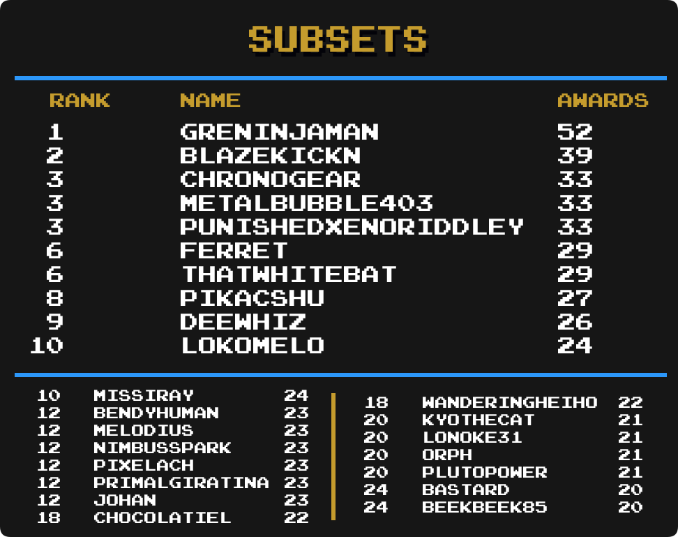
-
 GreninjaMan remains in 1st with 52 total mastery awards.
GreninjaMan remains in 1st with 52 total mastery awards. -
ChronoGear has moved up 3 spots and is in a 3-way tie for 3rd place.
-
 Ferret has moved up 1 spot and is tied for 6th place.
Ferret has moved up 1 spot and is tied for 6th place. -
 deewhiz has moved up 2 spots and is in 9th place.
deewhiz has moved up 2 spots and is in 9th place. -
 Lokomelo has moved up 4 spots and is tied for 10th place.
Lokomelo has moved up 4 spots and is tied for 10th place. -
Melodius has moved up 5 spots and is in a 6-way tie for 12th place.
-
 NimbusSpark has moved up 1 spot and is in a 6-way tie for 12th place.
NimbusSpark has moved up 1 spot and is in a 6-way tie for 12th place. -
Johan has moved up 3 spots and is in a 6-way tie for 12th place.
-
 chocolatiel has moved up 3 spots and is tied for 18th place.
chocolatiel has moved up 3 spots and is tied for 18th place. -
 KyoTheCat has moved up 2 spots and is in a 4-way tie for 20th place.
KyoTheCat has moved up 2 spots and is in a 4-way tie for 20th place. -
 Orph has made it into the top 25 and is in a 4-way tie for 20th place.
Orph has made it into the top 25 and is in a 4-way tie for 20th place. -
 bastard has made it into the top 25 and is in a 7-way tie for 24th place.
bastard has made it into the top 25 and is in a 7-way tie for 24th place. -
 BeekBeek85 has made it into the top 25 and is in a 7-way tie for 24th place.
BeekBeek85 has made it into the top 25 and is in a 7-way tie for 24th place.
Amstrad CPC
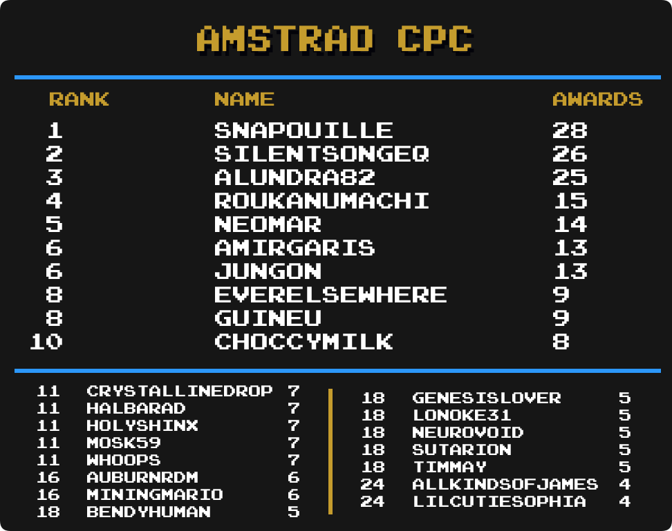
-
 Snapouille remains in 1st with 28 total mastery awards.
Snapouille remains in 1st with 28 total mastery awards. -
 EverElsewhere has moved up 2 spots and is tied for 8th place.
EverElsewhere has moved up 2 spots and is tied for 8th place. -
 CrystallineDrop has moved up 4 spots and is in a 5-way tie for 11th place.
CrystallineDrop has moved up 4 spots and is in a 5-way tie for 11th place. -
 Halbarad has moved up 7 spots and is in a 5-way tie for 11th place.
Halbarad has moved up 7 spots and is in a 5-way tie for 11th place.
Apple II
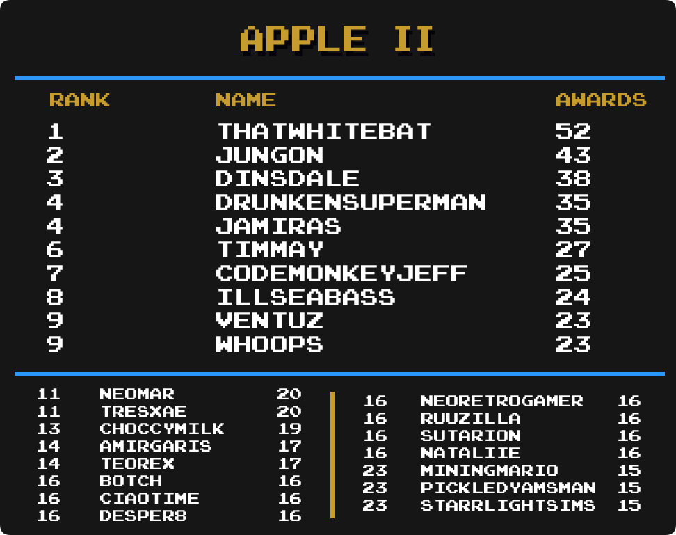
-
 ThatWhiteBat remains in 1st with 52 total mastery awards.
ThatWhiteBat remains in 1st with 52 total mastery awards. -
Jungon has moved up 14 spots and is in 2nd place.
-
 DrunkenSuperman has moved up 1 spot and is tied for 4th place.
DrunkenSuperman has moved up 1 spot and is tied for 4th place. -
 Jamiras has moved up 5 spots and is tied for 4th place.
Jamiras has moved up 5 spots and is tied for 4th place. -
Timmay has moved up 8 spots and is in 6th place.
-
 ILLSeaBass has moved up 1 spot and is in 8th place.
ILLSeaBass has moved up 1 spot and is in 8th place. -
NEOMAR has moved up 2 spots and is tied for 11th place.
-
 Tresxae has moved up 12 spots and is tied for 11th place.
Tresxae has moved up 12 spots and is tied for 11th place. -
ChoccyMilk has made it into the top 25 and is in 13th place.
-
AmirGaris has moved up 1 spot and is tied for 14th place.
-
 teorex has made it into the top 25 and is tied for 14th place.
teorex has made it into the top 25 and is tied for 14th place. -
CiaoTime has made it into the top 25 and is in a 7-way tie for 16th place.
-
 Desper8 has made it into the top 25 and is in a 7-way tie for 16th place.
Desper8 has made it into the top 25 and is in a 7-way tie for 16th place. -
 NeoRetroGamer has made it into the top 25 and is in a 7-way tie for 16th place.
NeoRetroGamer has made it into the top 25 and is in a 7-way tie for 16th place. -
Sutarion has made it into the top 25 and is in a 7-way tie for 16th place.
-
Nataliie has made it into the top 25 and is in a 7-way tie for 16th place.
-
 pickledyamsman has made it into the top 25 and is in a 3-way tie for 23rd place.
pickledyamsman has made it into the top 25 and is in a 3-way tie for 23rd place. -
 StarrlightSims has made it into the top 25 and is in a 3-way tie for 23rd place.ace.
StarrlightSims has made it into the top 25 and is in a 3-way tie for 23rd place.ace.
Arcade
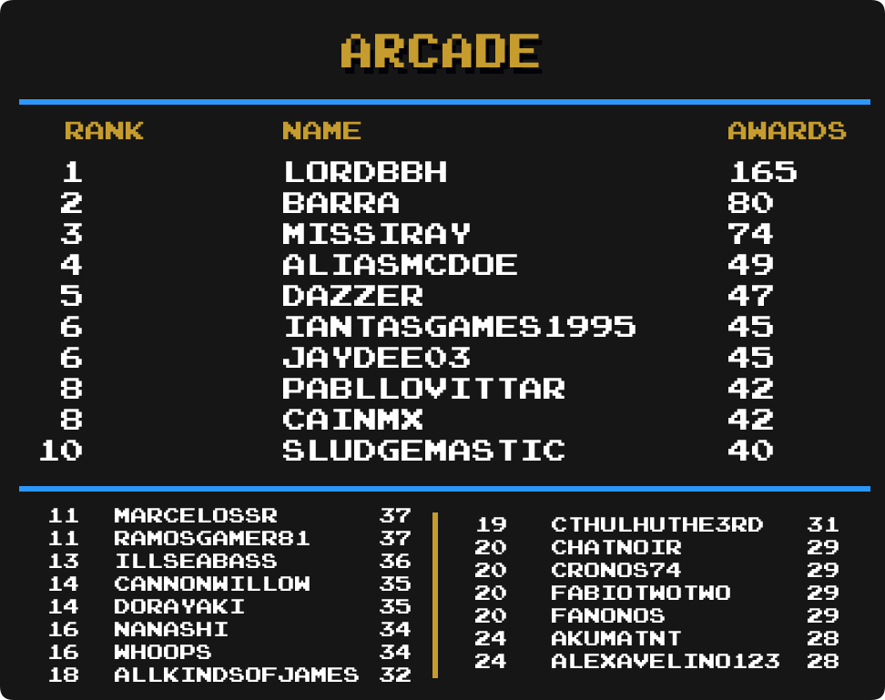
-
LordBBH remains in 1st with 165 total mastery awards.
-
 Dazzer has moved up 2 spots and is in 5th place.
Dazzer has moved up 2 spots and is in 5th place. -
 cannonwillow has moved up 4 spots and is tied for 14th place.
cannonwillow has moved up 4 spots and is tied for 14th place. -
 CthulhuThe3rd has made it into the top 25 and is in 19th place.
CthulhuThe3rd has made it into the top 25 and is in 19th place.
Arcadia 2001

-
 Maximdraco remains in 1st with 29 total mastery awards.
Maximdraco remains in 1st with 29 total mastery awards.
Arduboy
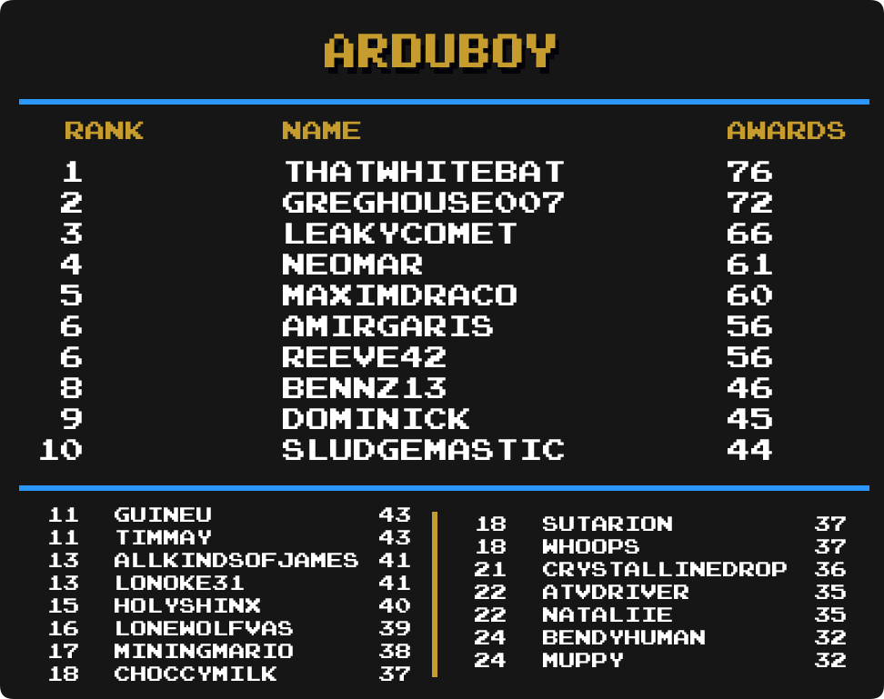
-
ThatWhiteBat remains in 1st with 76 total mastery awards.
-
Maximdraco has moved up 2 spots and is in 5th place.
-
Lonoke31 has moved up 1 spot and is tied for 13th place.
-
HolyShinx has moved up 1 spot and is in 15th place.
-
MiningMario has moved up 2 spots and is in 17th place.
-
ChoccyMilk has moved up 2 spots and is in a 3-way tie for 18th place.
-
CrystallineDrop has made it into the top 25 and is in 21st place.
-
atvdriver has made it into the top 25 and is tied for 22nd place.
Atari 2600
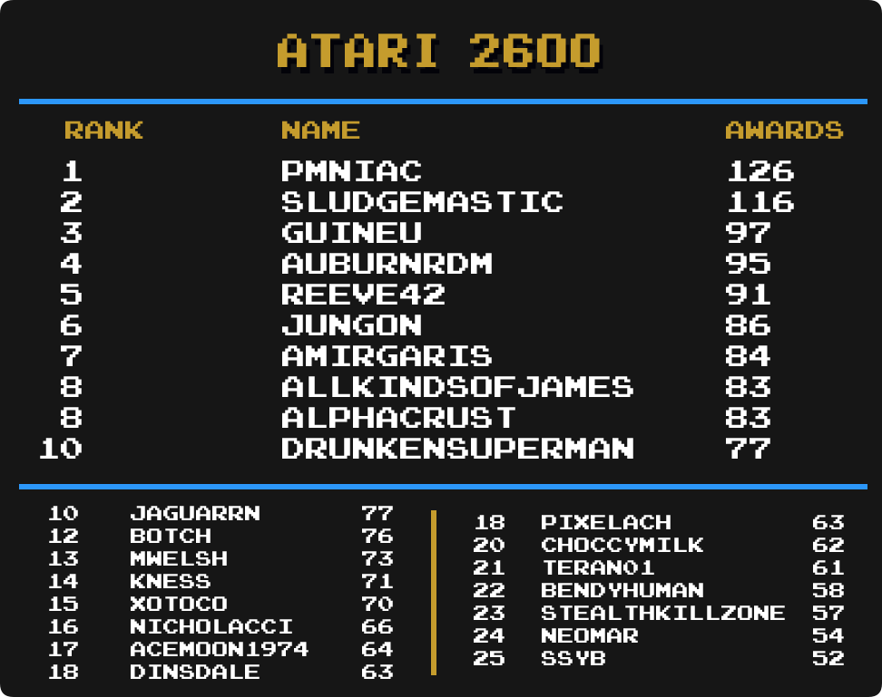
-
 PMniac remains in 1st with 126 total mastery awards.
PMniac remains in 1st with 126 total mastery awards. -
Jungon has moved up 1 spot and is in 6th place.
-
AmirGaris has moved up 2 spots and is in 7th place.
-
DrunkenSuperman has moved up 1 spot and is tied for 10th place.
-
 jaguarrn has moved up 1 spot and is tied for 10th place.
jaguarrn has moved up 1 spot and is tied for 10th place. -
 KNess has moved up 2 spots and is in 14th place.
KNess has moved up 2 spots and is in 14th place. -
 AceMoon1974 has moved up 2 spots and is in 17th place.
AceMoon1974 has moved up 2 spots and is in 17th place. -
ChoccyMilk has moved up 1 spot and is in 20th place.
-
 StealthKillZone has made it into the top 25 and is in 23rd place.
StealthKillZone has made it into the top 25 and is in 23rd place.
Atari Jaguar CD
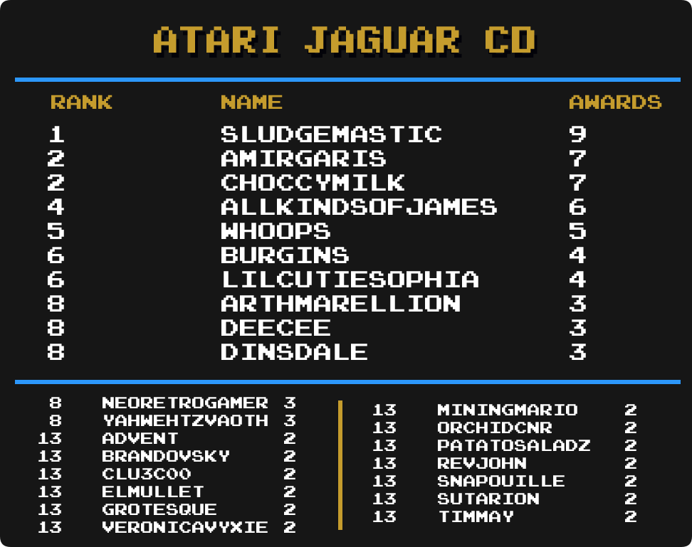
-
 sludgemastic remains in 1st with 9 total mastery awards.
sludgemastic remains in 1st with 9 total mastery awards. -
 Patatosaladz has made it into the top 25 and is in a 16-way tie for 13th place.
Patatosaladz has made it into the top 25 and is in a 16-way tie for 13th place.
Dreamcast
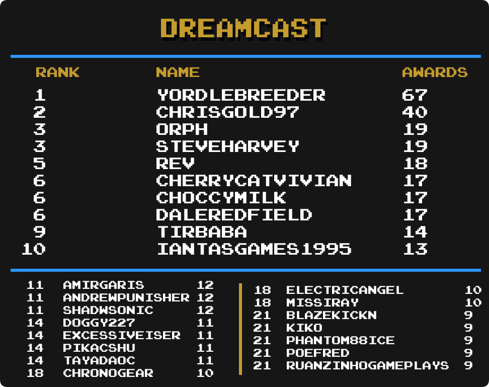
-
 Yordlebreeder remains in 1st with 67 total mastery awards.
Yordlebreeder remains in 1st with 67 total mastery awards. -
 CherryCatVivian has moved up 2 spots and is in a 3-way tie for 6th place.
CherryCatVivian has moved up 2 spots and is in a 3-way tie for 6th place. -
ChronoGear has moved up 2 spots and is in a 3-way tie for 18th place.
-
 Blazekickn has made it into the top 25 and is in a 9-way tie for 21st place.
Blazekickn has made it into the top 25 and is in a 9-way tie for 21st place.
Elektor TV Games Computer
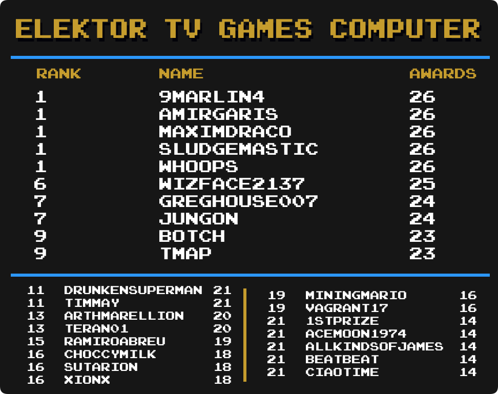
-
 9marlin4 remains in 1st with 26 total mastery awards.
9marlin4 remains in 1st with 26 total mastery awards. -
 1stPrize has made it into the top 25 and is in a 11-way tie for 21st place.
1stPrize has made it into the top 25 and is in a 11-way tie for 21st place. -
 beatbeat has made it into the top 25 and is in a 11-way tie for 21st place.
beatbeat has made it into the top 25 and is in a 11-way tie for 21st place.
Fairchild Channel F
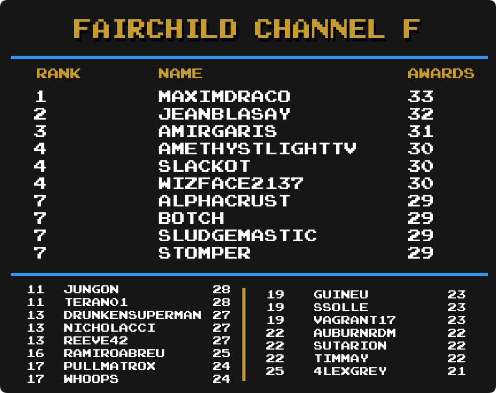
-
Maximdraco remains in 1st with 33 total mastery awards.
-
 Teran01 has moved up 3 spots and is tied for 11th place.
Teran01 has moved up 3 spots and is tied for 11th place.
Game Boy
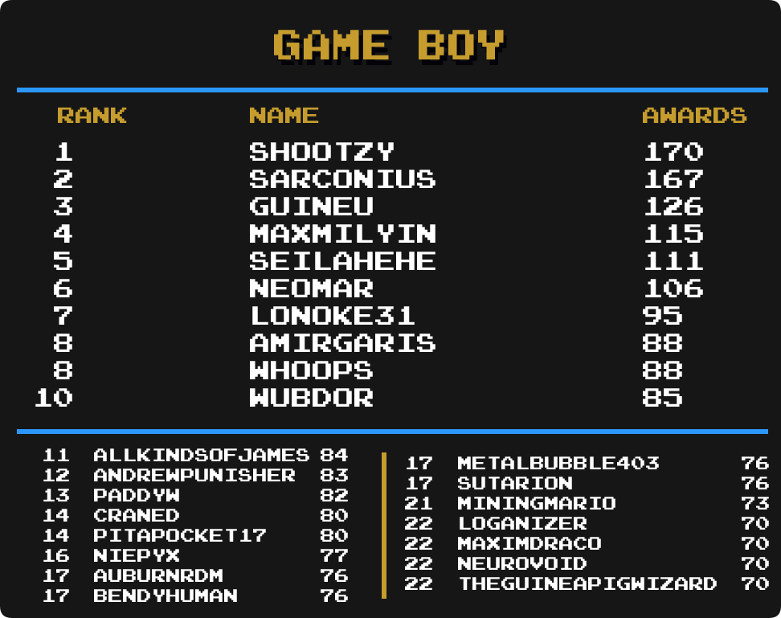
-
 Shootzy remains in 1st with 170 total mastery awards.
Shootzy remains in 1st with 170 total mastery awards. -
AmirGaris has moved up 1 spot and is tied for 8th place.
-
 Wubdor has moved up 6 spots and is in 10th place.
Wubdor has moved up 6 spots and is in 10th place. -
MiningMario has moved up 1 spot and is in 21st place.
-
 loganizer has made it into the top 25 and is in a 4-way tie for 22nd place.
loganizer has made it into the top 25 and is in a 4-way tie for 22nd place.
Game Boy Advance
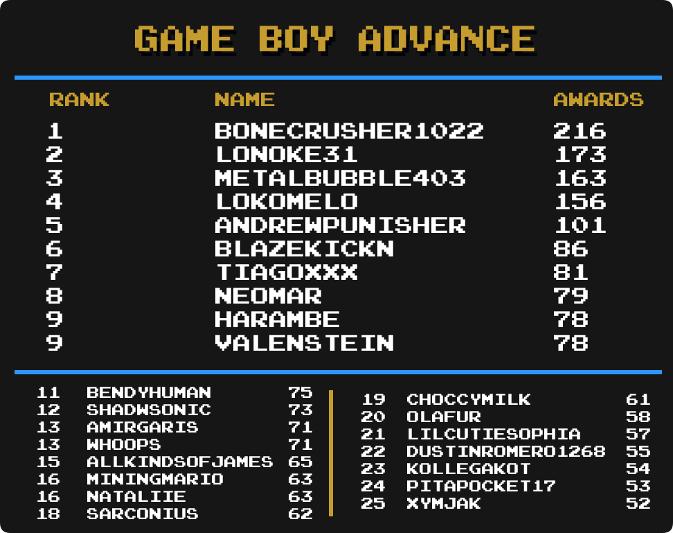
-
bonecrusher1022 remains in 1st with 216 total mastery awards.
-
NEOMAR has moved up 1 spot and is in 8th place.
-
AmirGaris has moved up 1 spot and is tied for 13th place.
-
MiningMario has moved up 3 spots and is tied for 16th place.
-
 KollegaKot has made it into the top 25 and is in 23rd place.
KollegaKot has made it into the top 25 and is in 23rd place.
Game Boy Color
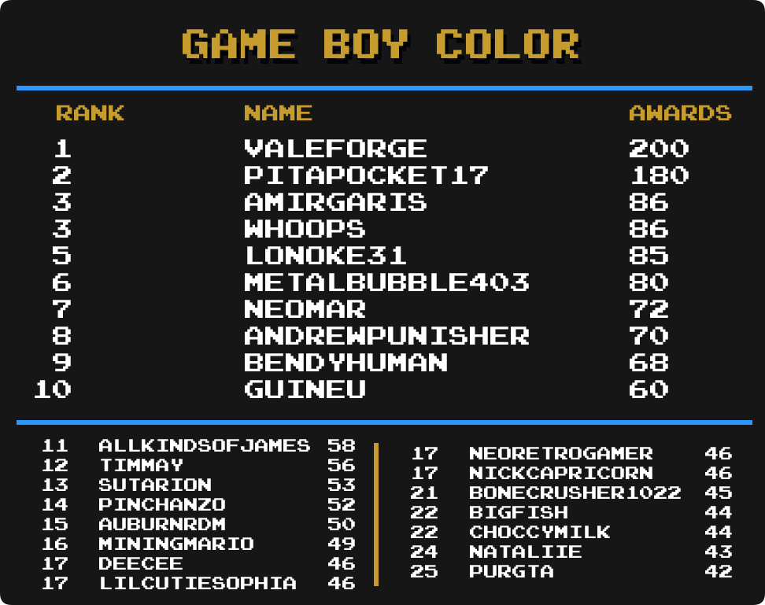
-
 valeforge remains in 1st with 200 total mastery awards.
valeforge remains in 1st with 200 total mastery awards. -
Sutarion has moved up 2 spots and is in 13th place.
-
DeeCee has moved up 7 spots and is in a 4-way tie for 17th place.
-
NeoRetroGamer has moved up 2 spots and is in a 4-way tie for 17th place.
Game Gear
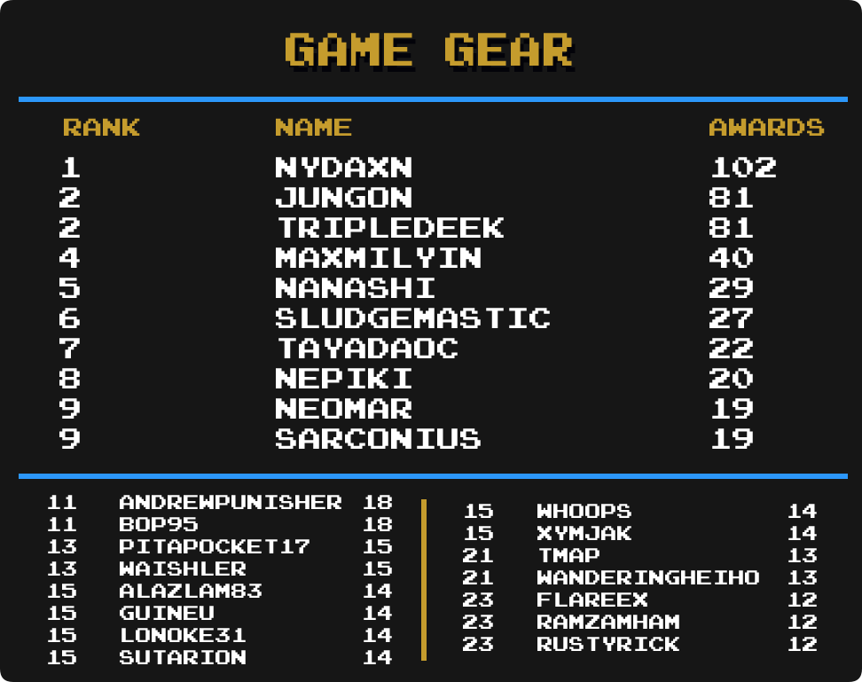
-
Nydaxn remains in 1st with 102 total mastery awards.
-
 Alazlam83 has made it into the top 25 and is in a 6-way tie for 15th place..
Alazlam83 has made it into the top 25 and is in a 6-way tie for 15th place..
GameCube
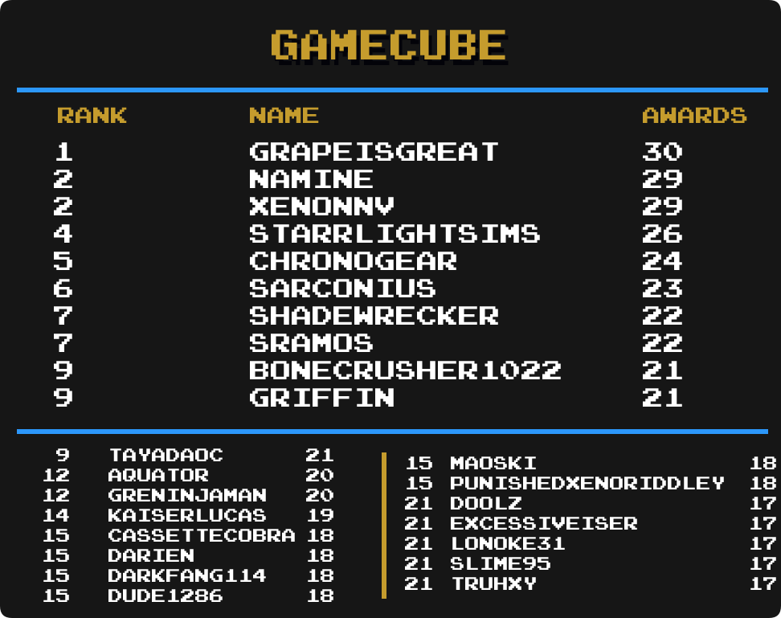
-
 grapeisgreat remains in 1st with 30 total mastery awards.
grapeisgreat remains in 1st with 30 total mastery awards. -
 Namine has moved up 1 spot and is tied for 2nd place.
Namine has moved up 1 spot and is tied for 2nd place. -
 Sarconius has moved up 3 spots and is in 6th place.
Sarconius has moved up 3 spots and is in 6th place. -
 Shadewrecker has moved up 3 spots and is tied for 7th place.
Shadewrecker has moved up 3 spots and is tied for 7th place. -
 Aquator has moved up 2 spots and is tied for 12th place.
Aquator has moved up 2 spots and is tied for 12th place. -
 CassetteCobra has moved up 5 spots and is in a 6-way tie for 15th place.
CassetteCobra has moved up 5 spots and is in a 6-way tie for 15th place. -
 Doolz has made it into the top 25 and is in a 6-way tie for 21st place.
Doolz has made it into the top 25 and is in a 6-way tie for 21st place. -
Lonoke31 has made it into the top 25 and is in a 6-way tie for 21st place.
-
 Slime95 has made it into the top 25 and is in a 6-way tie for 21st place.
Slime95 has made it into the top 25 and is in a 6-way tie for 21st place. -
 Truhxy has made it into the top 25 and is in a 6-way tie for 21st place.
Truhxy has made it into the top 25 and is in a 6-way tie for 21st place.
Interton VC 4000
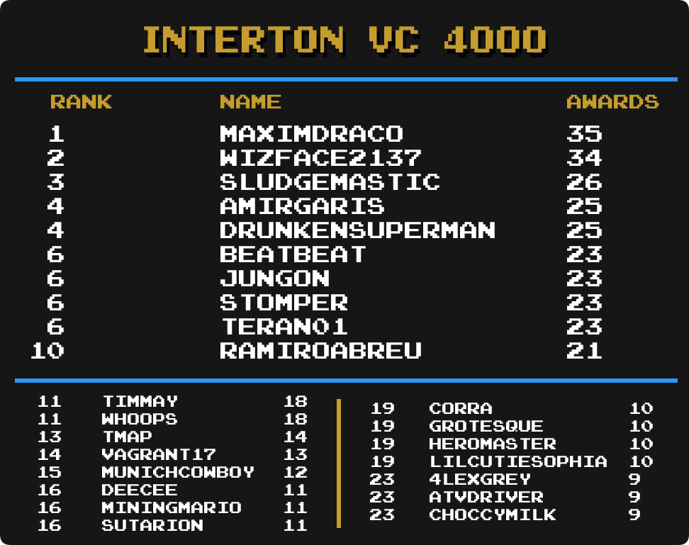
-
Maximdraco remains in 1st with 35 total mastery awards.
-
AmirGaris has moved up 1 spot and is tied for 4th place.
-
 Munichcowboy has moved up 8 spots and is in 15th place.
Munichcowboy has moved up 8 spots and is in 15th place. -
 Corra has made it into the top 25 and is in a 4-way tie for 19th place.
Corra has made it into the top 25 and is in a 4-way tie for 19th place. -
atvdriver has made it into the top 25 and is in a 5-way tie for 23rd place..
Master System
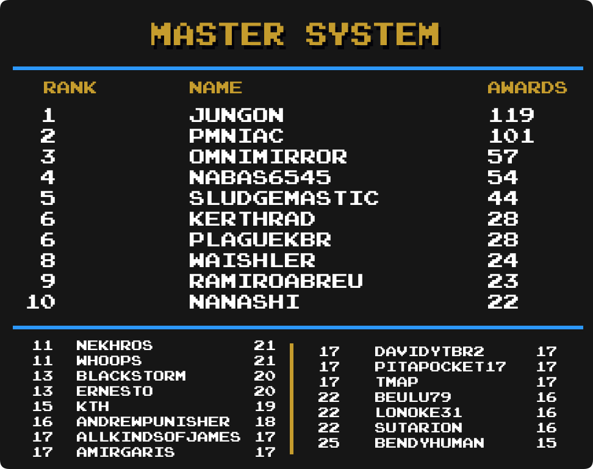
-
Jungon remains in 1st with 119 total mastery awards.
-
 Kerthrad has moved up 1 spot and is tied for 6th place.
Kerthrad has moved up 1 spot and is tied for 6th place. -
 blackstorm has moved up 8 spots and is tied for 13th place.
blackstorm has moved up 8 spots and is tied for 13th place. -
pitapocket17 has moved up 3 spots and is in a 5-way tie for 17th place.ce.
Mega Drive
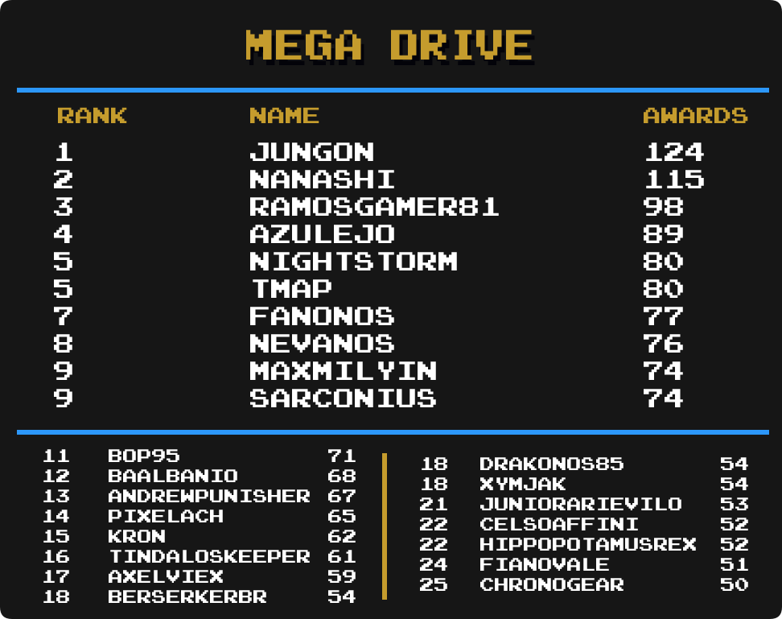
-
Jungon remains in 1st with 124 total mastery awards.
-
 Xymjak has moved up 1 spot and is in a 3-way tie for 18th place.
Xymjak has moved up 1 spot and is in a 3-way tie for 18th place. -
 HippopotamusRex has moved up 1 spot and is tied for 22nd place.
HippopotamusRex has moved up 1 spot and is tied for 22nd place. -
ChronoGear has made it into the top 25 and is tied for 25th place.
Mega Duck

-
 AzuchiAkeshi remains in 1st with 20 total mastery awards.
AzuchiAkeshi remains in 1st with 20 total mastery awards. -
ChoccyMilk has moved up 5 spots and is in a 4-way tie for 10th place.
-
ElMullet has moved up 7 spots and is in a 8-way tie for 14th place.
-
 bobolopster has made it into the top 25 and is in a 16-way tie for 22nd place.
bobolopster has made it into the top 25 and is in a 16-way tie for 22nd place.
Nintendo 64
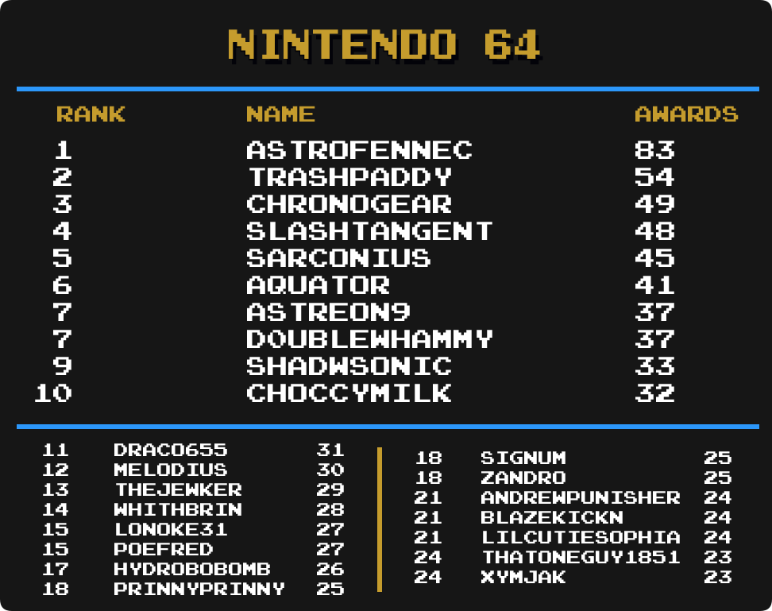
-
 AstroFennec remains in 1st with 83 total mastery awards.
AstroFennec remains in 1st with 83 total mastery awards. -
 TrashPaddy has moved up 3 spots and is in 2nd place.
TrashPaddy has moved up 3 spots and is in 2nd place. -
 Astreon9 has moved up 1 spot and is tied for 7th place.
Astreon9 has moved up 1 spot and is tied for 7th place. -
ChoccyMilk has moved up 1 spot and is in 10th place.
-
Melodius has moved up 2 spots and is in 12th place.
-
 TheJewker has moved up 5 spots and is in 13th place.
TheJewker has moved up 5 spots and is in 13th place. -
 PrinnyPrinny has moved up 1 spot and is in a 3-way tie for 18th place.
PrinnyPrinny has moved up 1 spot and is in a 3-way tie for 18th place. -
 zandro has moved up 3 spots and is in a 3-way tie for 18th place.
zandro has moved up 3 spots and is in a 3-way tie for 18th place. -
 thatoneguy1851 has made it into the top 25 and is tied for 24th place.
thatoneguy1851 has made it into the top 25 and is tied for 24th place. -
Xymjak has made it into the top 25 and is tied for 24th place.
NES
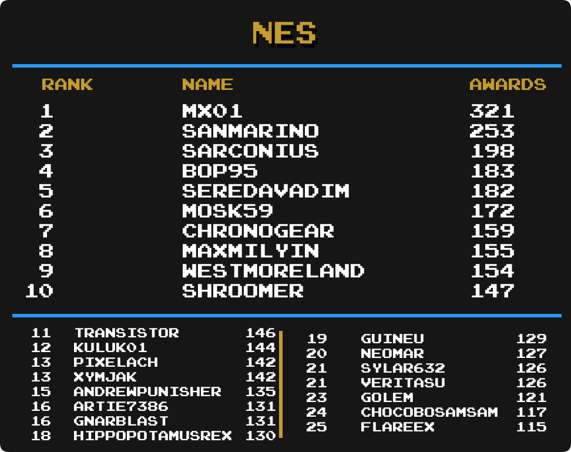
-
 mx01 remains in 1st with 321 total mastery awards.
mx01 remains in 1st with 321 total mastery awards. -
 Pixelach has moved up 1 spot and is tied for 13th place.
Pixelach has moved up 1 spot and is tied for 13th place. -
 gnarblast has moved up 2 spots and is tied for 16th place.
gnarblast has moved up 2 spots and is tied for 16th place.
Nintendo DS
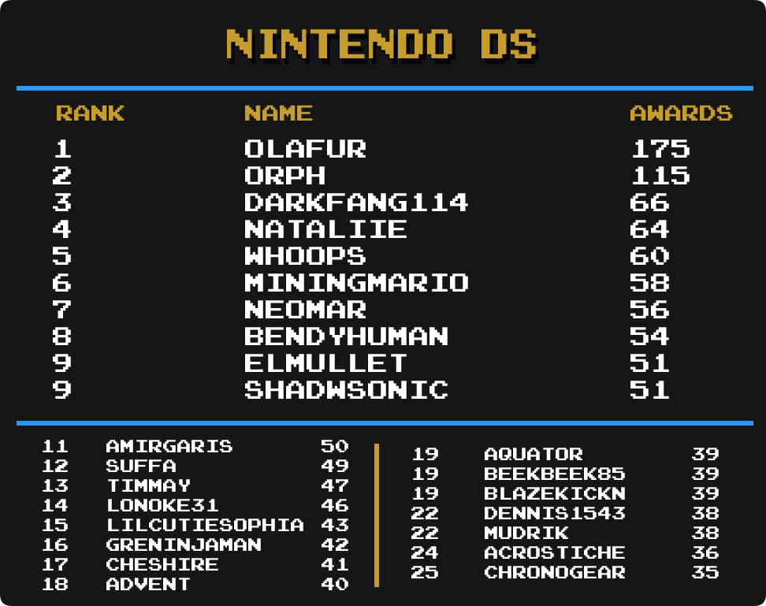
-
 Olafur remains in 1st with 175 total mastery awards.
Olafur remains in 1st with 175 total mastery awards. -
Nataliie has moved up 10 spots and is in 4th place.
-
ElMullet has moved up 2 spots and is tied for 9th place.
-
GreninjaMan has moved up 6 spots and is in 16th place.
-
ChronoGear has made it into the top 25 and is in 25th place.
Nintendo DSi
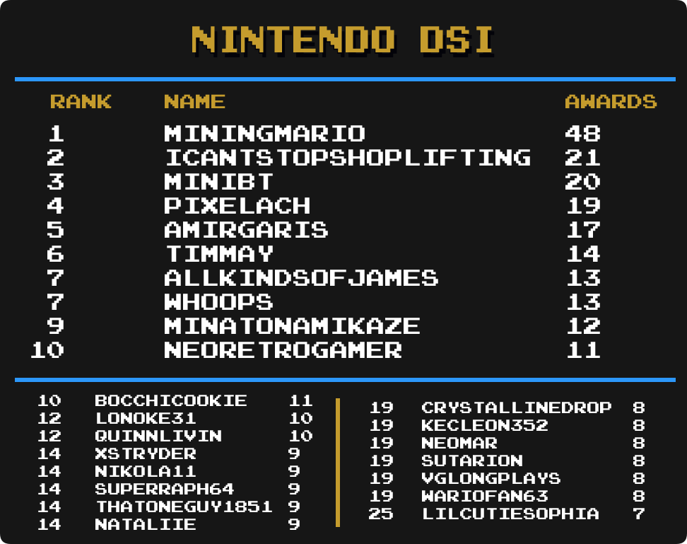
-
MiningMario remains in 1st with 48 total mastery awards.
-
 minibt has moved up 1 spot and is in 3rd place.
minibt has moved up 1 spot and is in 3rd place. -
Timmay has moved up 1 spot and is in 6th place.
-
 quinnlivin has moved up 1 spot and is tied for 12th place.
quinnlivin has moved up 1 spot and is tied for 12th place. -
 xStryder has moved up 10 spots and is in a 5-way tie for 14th place.
xStryder has moved up 10 spots and is in a 5-way tie for 14th place. -
CrystallineDrop has moved up 4 spots and is in a 6-way tie for 19th place.
-
 LilCutieSophia has made it into the top 25 and is in a 3-way tie for 25th place.
LilCutieSophia has made it into the top 25 and is in a 3-way tie for 25th place.
PC Engine
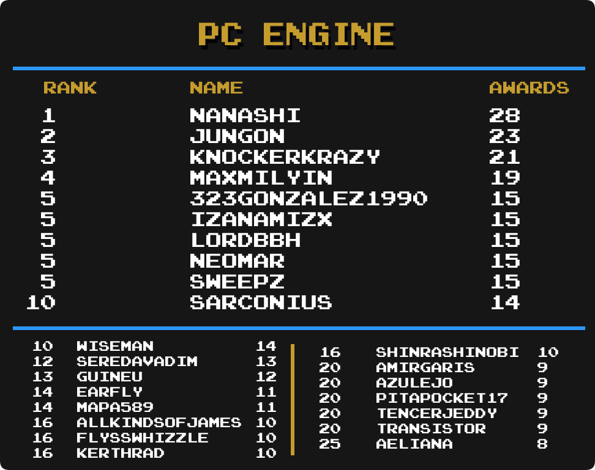
-
 Nanashi remains in 1st with 28 total mastery awards.
Nanashi remains in 1st with 28 total mastery awards. -
 IzaNamiZX has moved up 3 spots and is in a 5-way tie for 5th place.
IzaNamiZX has moved up 3 spots and is in a 5-way tie for 5th place. -
 FlyssWhizzle has moved up 8 spots and is in a 4-way tie for 16th place.
FlyssWhizzle has moved up 8 spots and is in a 4-way tie for 16th place.
PC Engine CD
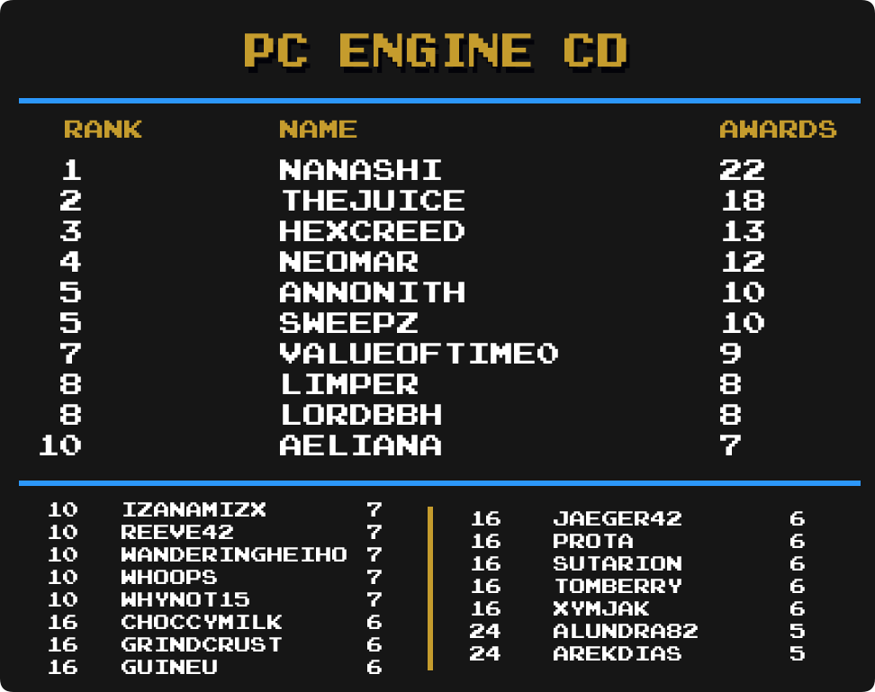
-
Nanashi remains in 1st with 22 total mastery awards.
-
 Limper has moved up 2 spots and is tied for 8th place.
Limper has moved up 2 spots and is tied for 8th place. -
 Aeliana has moved up 5 spots and is in a 6-way tie for 10th place.
Aeliana has moved up 5 spots and is in a 6-way tie for 10th place.
PC-8000/8800
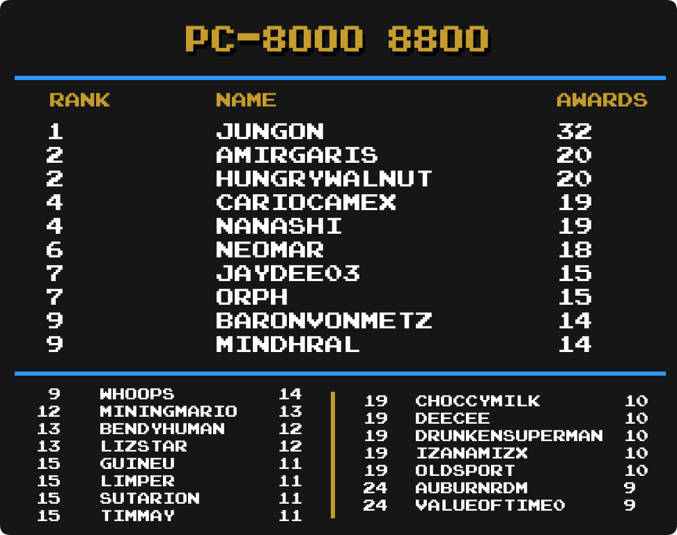
-
Jungon remains in 1st with 32 total mastery awards.
-
 HungryWalnut has moved up 2 spots and is tied for 2nd place.
HungryWalnut has moved up 2 spots and is tied for 2nd place. -
 Mindhral has moved up 1 spot and is in a 3-way tie for 9th place.
Mindhral has moved up 1 spot and is in a 3-way tie for 9th place. -
Limper has moved up 4 spots and is in a 4-way tie for 15th place.
-
Sutarion has moved up 4 spots and is in a 4-way tie for 15th place.
-
ChoccyMilk has moved up 6 spots and is in a 5-way tie for 19th place.
-
OldSport has made it into the top 25 and is in a 5-way tie for 19th place.
PlayStation

-
 FBiDev remains in 1st with 145 total mastery awards.
FBiDev remains in 1st with 145 total mastery awards. -
 AndrewPunisher has moved up 1 spot and is in 4th place.
AndrewPunisher has moved up 1 spot and is in 4th place. -
 Pikacshu has moved up 4 spots and is in 10th place.
Pikacshu has moved up 4 spots and is in 10th place. -
 Varilinity has moved up 4 spots and is in 19th place.
Varilinity has moved up 4 spots and is in 19th place. -
Timmay has made it into the top 25 and is in 24th place.
PlayStation 2
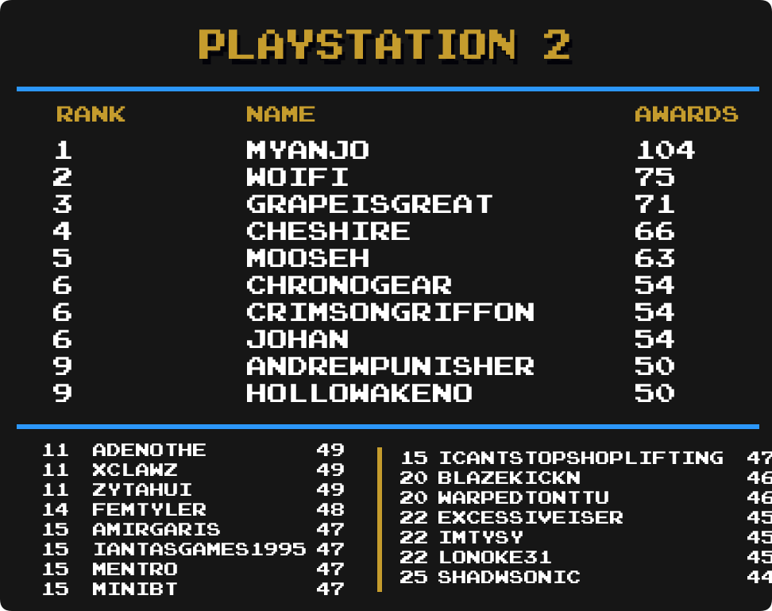
-
 Myanjo remains in 1st with 104 total mastery awards.
Myanjo remains in 1st with 104 total mastery awards. -
 woifi has moved up 1 spot and is in 2nd place.
woifi has moved up 1 spot and is in 2nd place. -
 CrimsonGriffon has moved up 14 spots and is in a 3-way tie for 6th place.
CrimsonGriffon has moved up 14 spots and is in a 3-way tie for 6th place. -
 xClawz has moved up 3 spots and is in a 3-way tie for 11th place.
xClawz has moved up 3 spots and is in a 3-way tie for 11th place. -
AmirGaris has moved up 1 spot and is in a 5-way tie for 15th place.
-
 IantasGames1995 has moved up 1 spot and is in a 5-way tie for 15th place.
IantasGames1995 has moved up 1 spot and is in a 5-way tie for 15th place. -
 Mentro has moved up 1 spot and is in a 5-way tie for 15th place.
Mentro has moved up 1 spot and is in a 5-way tie for 15th place. -
 Excessiveiser has made it into the top 25 and is in a 3-way tie for 22nd place.
Excessiveiser has made it into the top 25 and is in a 3-way tie for 22nd place. -
 Imtysy has made it into the top 25 and is in a 3-way tie for 22nd place.
Imtysy has made it into the top 25 and is in a 3-way tie for 22nd place.
PlayStation Portable
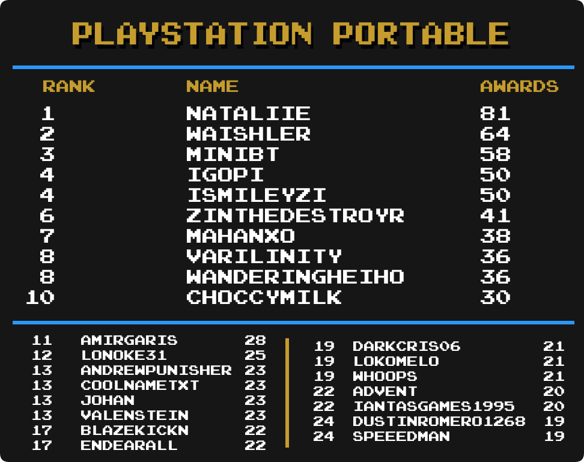
-
Nataliie remains in 1st with 81 total mastery awards.
-
Lonoke31 has moved up 1 spot and is in 12th place.
-
 CoolNameTXT has moved up 7 spots and is in a 4-way tie for 13th place.
CoolNameTXT has moved up 7 spots and is in a 4-way tie for 13th place. -
 endearall has made it into the top 25 and is tied for 17th place.
endearall has made it into the top 25 and is tied for 17th place. -
 Speeedman has made it into the top 25 and is in a 3-way tie for 24th place.
Speeedman has made it into the top 25 and is in a 3-way tie for 24th place.
Pokémon Mini

-
ThatWhiteBat remains in 1st with 38 total mastery awards.
Sega Saturn
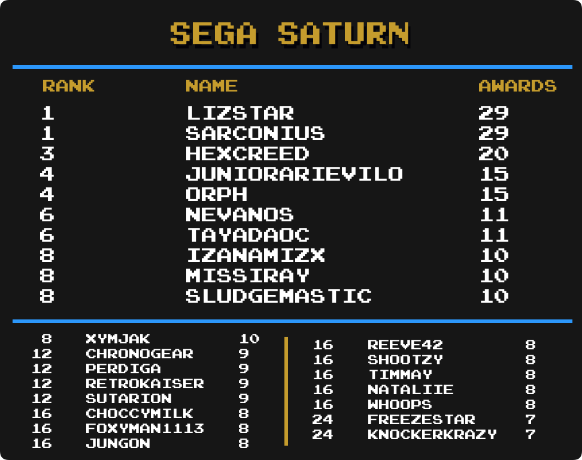
-
 lizstar has taken 1st place with 29 total mastery awards.
lizstar has taken 1st place with 29 total mastery awards. -
 JuniorArievilo has moved up 1 spot and is tied for 4th place.
JuniorArievilo has moved up 1 spot and is tied for 4th place. -
 perdiga has moved up 5 spots and is in a 4-way tie for 12th place.
perdiga has moved up 5 spots and is in a 4-way tie for 12th place.
Sega CD
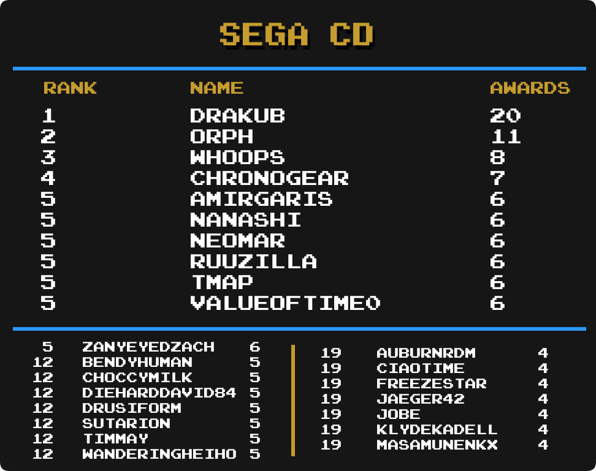
-
 Drakub remains in 1st with 20 total mastery awards.
Drakub remains in 1st with 20 total mastery awards. -
 Jobe has made it into the top 25 and is in a 14-way tie for 19th place.
Jobe has made it into the top 25 and is in a 14-way tie for 19th place.
SG-1000
-
Jungon remains in 1st with 62 total mastery awards.
-
 Thoreau has moved up 1 spot and is tied for 4th place.
Thoreau has moved up 1 spot and is tied for 4th place. -
 The1Ross has moved up 1 spot and is in 8th place.
The1Ross has moved up 1 spot and is in 8th place. -
 tmap has moved up 1 spot and is tied for 9th place.
tmap has moved up 1 spot and is tied for 9th place. -
ChoccyMilk has moved up 7 spots and is in a 4-way tie for 16th place.
SNES
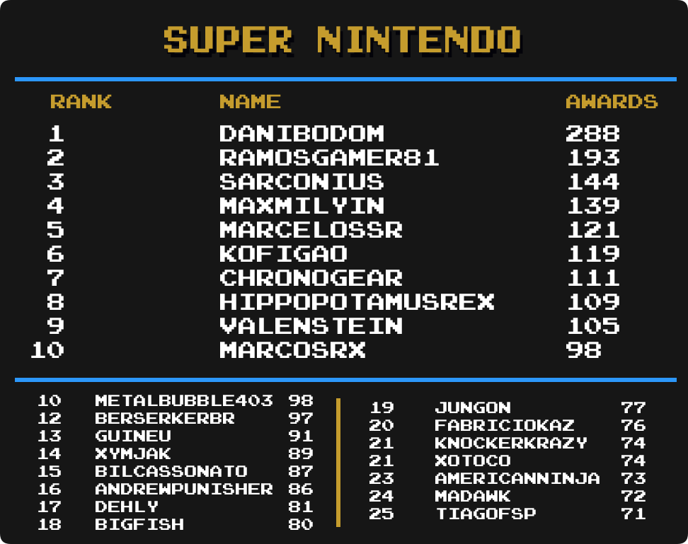
-
 danibodom remains in 1st with 288 total mastery awards.
danibodom remains in 1st with 288 total mastery awards. -
 bilcassonato has moved up 1 spot and is in 15th place.
bilcassonato has moved up 1 spot and is in 15th place. -
 KnockerKrazy has moved up 2 spots and is tied for 21st place.
KnockerKrazy has moved up 2 spots and is tied for 21st place.
Uzebox
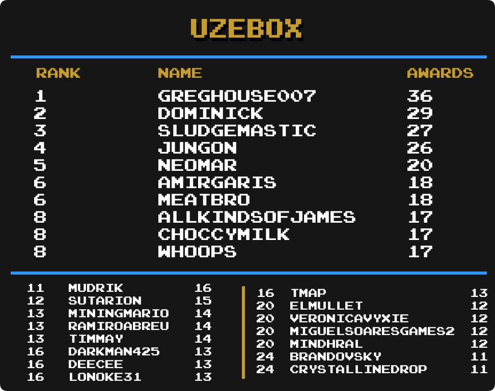
-
 GregHouse007 remains in 1st with 36 total mastery awards.
GregHouse007 remains in 1st with 36 total mastery awards. -
 Dominick has moved up 1 spot and is in 2nd place.
Dominick has moved up 1 spot and is in 2nd place. -
Sutarion has moved up 2 spots and is in 12th place.
-
Timmay has moved up 2 spots and is in a 3-way tie for 13th place.
-
DeeCee has moved up 1 spot and is in a 4-way tie for 16th place.
-
tmap has moved up 6 spots and is in a 4-way tie for 16th place.
-
ElMullet has made it into the top 25 and is in a 4-way tie for 20th place.
-
 MiguelsoaresGames2 has moved up 1 spot and is in a 4-way tie for 20th place.
MiguelsoaresGames2 has moved up 1 spot and is in a 4-way tie for 20th place.
Virtual Boy
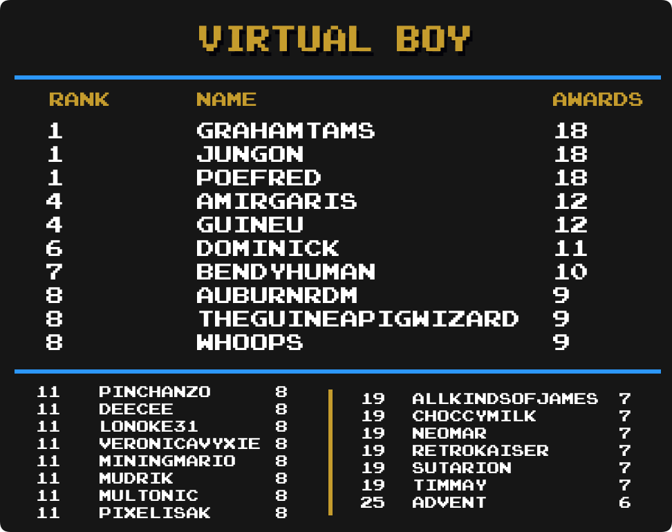
-
 Grahamtams remains in 1st with 18 total mastery awards.
Grahamtams remains in 1st with 18 total mastery awards.
WASM-4
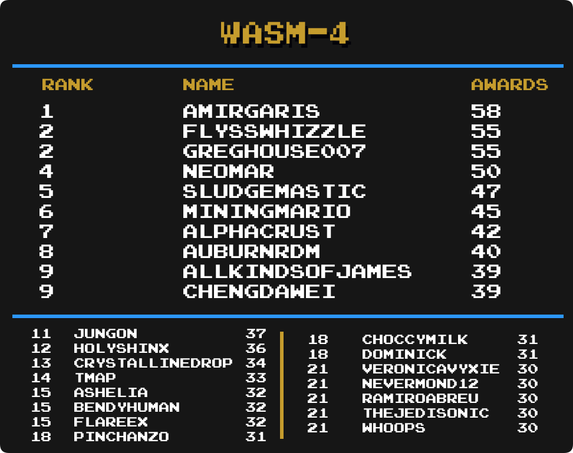
-
AmirGaris remains in 1st with 58 total mastery awards.
-
FlyssWhizzle has moved up 1 spot and is tied for 2nd place.
Watara Supervision
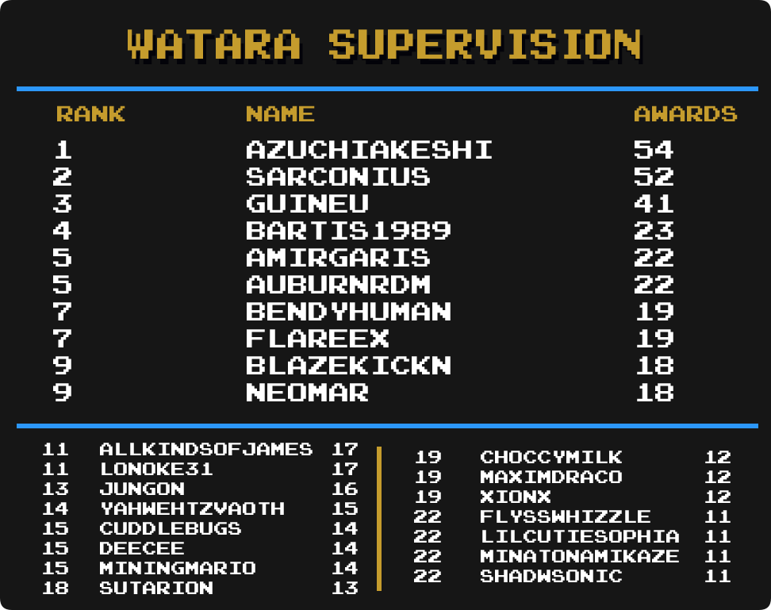
-
AzuchiAkeshi remains in 1st with 54 total mastery awards.
-
ChoccyMilk has moved up 2 spots and is in a 3-way tie for 19th place.